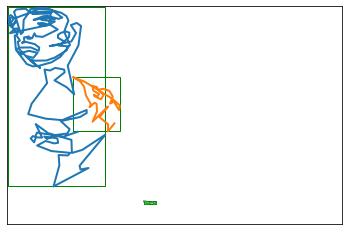

Many drawings in the dataset represent a single face, where the model can learn to start a drawing and stop when the face is more or less completed. However, some scans include a page where I drew multiple drawings. Looking at the full image below, it seems that two of the strokes (purple and green) are obviously connected as part of the same “drawing”.
However, the blue, red, and orange strokes seem distinct - there’s a significant amount of space between them. Intuitively, if I drew a box around each sub-drawing (based on the minimum and maximum X and Y coordinate values), I could quantity how much overlap exists.
no env var SINGLELINE_DATA_HOME, defaulting to: None
This drawing has 5 distinct strokes
# make a shorthand for individual strokes within the drawings00 = s0[0]s01 = s0[1]s02 = s0[2]s03 = s0[3]s04 = s0[4]bb02 = BoundingBox.create(s02)bb04 = BoundingBox.create(s04)print(bb02)print(bb04)plot_strokes([s02, s04], bounding_boxes=True)
BBox((96.63026729741347, 10.718543770600853), (125.19782419420726, 54.38382939025482)) (width 28.56755689679379 x height 43.665285619653964)
BBox((76.1019055995039, 20.73623921702644), (109.21657860962235, 100.64026618156714)) (width 33.11467301011845 x height 79.9040269645407)
Intersections between Bounding Boxes
Now I’d like to visualize the intersection between these two bounding boxes.
intersection_02_04 = bb02.intersection(bb04)print(intersection_02_04)# note that taking bb02's intersection with bb04 is identical to bb04's intersection with bb02assert intersection_02_04.area() == bb04.intersection(bb02).area()
BBox((96.63026729741347, 20.73623921702644), (109.21657860962235, 54.38382939025482)) (width 12.586311312208878 x height 33.64759017322838)
What I’d like to do is rank intersections between bounding boxes by their relative importance. How much space does the intersection take up relative to the overall area of the two shapes that are intersecting?
There’s a helpful metric here called intersection over union:
# compute the areas of the two shapesarea_02 = bb02.area()area_04 = bb04.area()print(f"Shape 2 area: {area_02}, Shape 4 area: {area_04}")# compute the area of the intersectionintersection_area = intersection_02_04.area()print(f"Intersection Area: {intersection_area}")# divide the intersection area by the sum of each shape minus the intersection areaintersection_over_union = intersection_area / (area_02 + area_04 - intersection_area)print(f"IOU: {intersection_over_union}")
Now I can compare the smaller intersection’s IOU value and see a significant difference:
print(f"IOU of larger overlap: {bb02.iou(bb04)}")print(f"IOU of smaller overlap: {bb00.iou(bb01)}")
IOU of larger overlap: 0.12204909785596094
IOU of smaller overlap: 0.035704846519125095
Sanity Check: Non-Intersecting Shapes
I’ll pick two shapes that don’t overlap, and verify a couple of conditions I expect to be true: - BoundingBox.intersection() should return None. - BoundingBox.iou() should return 0.0.
My goal here is to go through a full scan, and decide which strokes should stay together and which ones should be split out into separate files. The rough idea I have in mind is to take all the strokes, and compute overlaps between each pair of strokes.
bboxes = [BoundingBox.create(s) for s in s0]list(combinations(range(len(s0)), 2))
n =2print(f"stroke at index {n} has an intersection with stroke at index {max_iou_idx[n]} with IOU = {max_iou_val[n]}")n =4print(f"stroke at index {n} has an intersection with stroke at index {max_iou_idx.get(n, None)} with IOU = {max_iou_val.get(n, None)}")
stroke at index 2 has an intersection with stroke at index 4 with IOU = 0.12204909785596094
stroke at index 4 has an intersection with stroke at index 2 with IOU = 0.12204909785596094
Merging Strokes With Sufficient Overlap
Now I want to write a function that’ll iterate through the bounding boxes and decide which ones should be merged. This function should accept: 1. a list of lists of stroke indices 2. a list of bounding boxes corresponding to the space covered by the strokes represented by the indices in each list.
For each set of overlapping bounding boxes, if the IOU exceeds a provided threshold (I’ve chosen 0.05 as a starting point), I want to merge those stroke indices into a single list.
def single_pass_merge_bboxes(stroke_idxs, bboxes, iou_threshold=0.05, debug=False):def log(msg, debug=False):if debug:print(msg)assertlen(stroke_idxs) ==len(bboxes) next_stroke_idxs = [] next_bboxes = [] max_iou_val, max_iou_idx = overlapping_bboxes(bboxes) bb_idxs = max_iou_val.keys() removed = []for a in bb_idxs:if a in removed: log(f"{a}: already joined ", debug)continue b = max_iou_idx[a] iou = max_iou_val[a]if iou >= iou_threshold: log(f"{a}-{b}: JOIN max IOU = {iou} for strokes ({stroke_idxs[a]}, {stroke_idxs[b]})", debug, )# remove the joined strokes from consideration for joins in this pass removed.append(a) removed.append(b)# save the combined stroke lists to return next_stroke_idxs.append(stroke_idxs[a] + stroke_idxs[b])# save a merged bounding box, representing the union of the lists of strokes. next_bboxes.append(bboxes[a].merge(bboxes[b]))elif iou ==0: log(f"{a}-{b}: NO INTERSECTION", debug)else: log(f"{a}-{b}: IOU value {iou} is below threshold", debug)for i inrange(len(bboxes)):if i in removed: log(f"SKIP: {i} has already been removed in: {removed}", debug)continue log(f"KEEP: {i}", debug) next_stroke_idxs.append(stroke_idxs[i]) next_bboxes.append(bboxes[i]) log("---------", debug)return next_stroke_idxs, next_bboxes
In this case, the function correctly decides to merge strokes 2 and 4:
stroke_idxs = [[i] for i inrange(len(s0))]bboxes = [BoundingBox.create(s) for s in s0]single_pass_merge_bboxes(stroke_idxs, bboxes, debug=True)plot_intersection(s02, s04, extra_bb=bb02.merge(bb04))
0-1: IOU value 0.035704846519125095 is below threshold
1-0: IOU value 0.035704846519125095 is below threshold
2-4: JOIN max IOU = 0.12204909785596094 for strokes ([2], [4])
3-0: NO INTERSECTION
4: already joined
KEEP: 0
KEEP: 1
SKIP: 2 has already been removed in: [2, 4]
KEEP: 3
SKIP: 4 has already been removed in: [2, 4]
---------
Now I’ll look at a more complex example:
s6 = deltas_to_strokes(full_dataset[6])plot_strokes(s6, bounding_boxes=True)stroke_idxs = [[i] for i inrange(len(s6))]bboxes = [BoundingBox.create(s) for s in s6]single_pass_merge_bboxes(stroke_idxs, bboxes, debug=True)
0-1: JOIN max IOU = 0.304835709605367 for strokes ([0], [1])
1: already joined
2-0: JOIN max IOU = 0.0789861881324346 for strokes ([2], [0])
3-0: NO INTERSECTION
SKIP: 0 has already been removed in: [0, 1, 2, 0]
SKIP: 1 has already been removed in: [0, 1, 2, 0]
SKIP: 2 has already been removed in: [0, 1, 2, 0]
KEEP: 3
---------
The function correctly decided to merge strokes 0 and 1, but there remains a large overlap with stroke 2. So I’ll need to make multiple passes through each drawing, stopping when no more stroke merges have happened in a given iteration.
stroke_groups, bboxes = separate_non_overlapping(s0)print(stroke_groups)for sg in stroke_groups: strokes = [s0[i] for i in sg] plot_strokes(strokes)
[[2, 4], [0], [1], [3]]
Now, to verify that it worked for the problem case above:
stroke_groups, bboxes = separate_non_overlapping(s6)print(stroke_groups)for sg in stroke_groups: strokes = [s6[i] for i in sg] plot_strokes(strokes)
[[0, 1, 2, 0], [3]]
One last detail: sometimes there are small bits of writing in the scan (usually page numbers I’ve recorded).
So I’d like to apply an area threshold, and if a shape’s bounding box is below the threshold I can just omit that from the final list of strokes.
area_threshold =500stroke_groups, bboxes = separate_non_overlapping(s6)for sg, bb inzip(stroke_groups, bboxes): strokes = [s6[i] for i in sg]if bb.area() < area_threshold:continue plot_strokes(strokes)
One last thing: each of the split-out drawings is now much smaller than the available range, and is offset in the coordinate space. I’ll rescale the coordinates so each sub-drawing now fits the space.
stroke_groups, bboxes = separate_non_overlapping(s0)for sg, bb inzip(stroke_groups, bboxes): strokes = [s0[i] for i in sg]if bb.area() < area_threshold:continue rescaled = rescale_strokes(strokes, target_size=200) plot_strokes(rescaled)
item = deltas_to_strokes(full_dataset[3])for s in group_and_rescale_overlapping_strokes(item): plot_strokes(s)# show the original for comparisonplot_strokes(item, bounding_boxes=True)

item = deltas_to_strokes(full_dataset[5])for s in group_and_rescale_overlapping_strokes(item): plot_strokes(s)# show the original for comparisonplot_strokes(item, bounding_boxes=True)
item = deltas_to_strokes(full_dataset[7])for s in group_and_rescale_overlapping_strokes(item): plot_strokes(s)# show the original for comparisonplot_strokes(item, bounding_boxes=True)
item = deltas_to_strokes(full_dataset[8])for s in group_and_rescale_overlapping_strokes(item): plot_strokes(s)# show the original for comparisonplot_strokes(item, bounding_boxes=True)
Generating a new dataset
## to use the full dataset:data_home = singleline_data_home()input_path = data_home /"stroke3/epoch-20231214/full-v2-eps10.npz"full_dataset = np.load( input_path, encoding="latin1", allow_pickle=True,)["arr_0"]print(len(full_dataset))
no env var SINGLELINE_DATA_HOME, defaulting to: None
1921